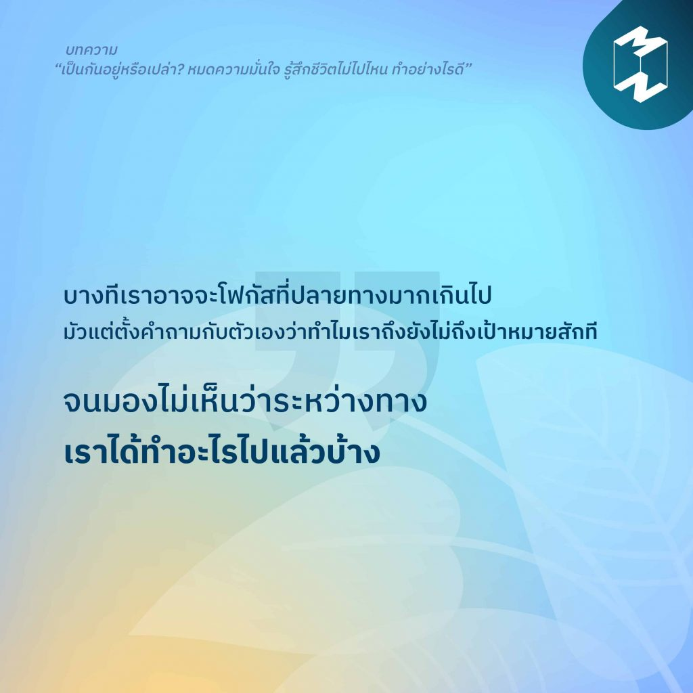

5)“บางทีเราอาจจะโฟกัสที่ปลายทางมากเกินไป”
“บางทีเราอาจจะโฟกัสที่ปลายทางมากเกินไป มัวแต่ตั้งคำถามกับตัวเองว่าทำไมเราถึงยังไม่ถึงเป้าหมายสักที จนมองไม่เห็นว่าระหว่างทางเราได้ทำอะไรไปแล้วบ้าง” ร่วมปรับความคิดและการกระทำ ไม่ให้รู้สึกว่าเรากำลังจมอยู่กับที่เดิมและไม่พัฒนาไปไหน ได้ในบทความ “เป็นกันอยู่หรือเปล่า? หมดความมั่นใจ รู้สึกชีวิตไม่ไปไหน ทำอย่างไรดี”